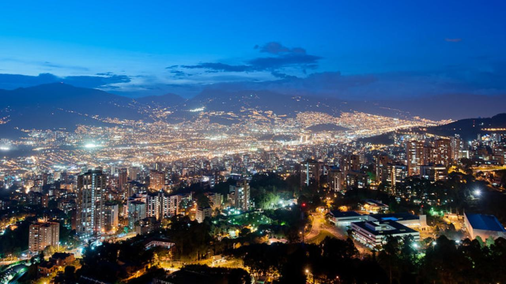

Luces del Centro
- Distancia: 10 km
- Duración: 2 horas
- Punto de encuentro: Sede Rueda Libre
Nivel: Fácil
$55.000
Inscríbete aquíDescubre Medellín en bici cuando se encienden las luces
Nuevo Jueves a sábado
Nivel: Fácil
$55.000
Inscríbete aquí
Nivel: Medio
$75.000
Inscríbete aquíNivel: Difícil
$95.000
Inscríbete aquíEscoge el recorrido nocturno que más te guste.
Reserva tu lugar para participar en el recorrido.
Recibe tu bicicleta y los elementos de seguridad.
Disfruta Medellín de noche con nuestros guías.
Elige tu ruta y vive Medellín desde otra perspectiva.